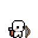
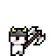
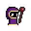
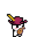
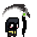
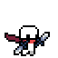
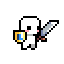
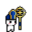
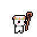
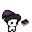

-
Arqueiro #001
- distancia
- dano
Especialista em combate à distância, habilidoso no uso do arco e flechas para atacar os inimigos. Eles são conhecidos por sua precisão, velocidade e agilidade.
-
Barbaro #002
- guerreiro
- dano
Conhecida por sua força bruta, resistência física e habilidades de combate selvagens. Sua raiva lhes confere poderosos ataques e capacidade de resistência, tornando-os o terror de seus inimigos.
-
Mago #003
- magia
- dano
Conhecida por sua habilidade em manipular a magia. Eles são estudiosos dedicados, capazes de lançar feitiços poderosos e controlar os elementos. Embora sejam menos resistentes em combate físico, sua magia os torna uma força formidável.
-
Bardo #004
- magia
- suporte
Mestre na manipulação das emoções e têm a capacidade de causar efeitos positivos ou negativos em seus aliados e inimigos. Eles podem cantar canções que inspiram, concedendo bônus de combate para seus companheiros, ou podem realizar performances encantadoras para distrair seus oponetes.
-
Necromante #005
- magia
- dano
Especialistas em magias de morte e controle de mortos-vivos. Eles podem invocar esqueletos, zumbis ou outros servos mortos-vivos para lutar ao seu lado, usa magia sombria e drenar a energia vital de seus inimigos.
-
Assassino #006
- dano
- furtivo
Especialistas em furtividade, agilidade e ataques furtivos. Mestres em causar danos críticos e podem desativar armadilhas, roubar itens valiosos e desbloquear fechaduras.
-
Guerreiro #007
- tank
- dano
Mestre do combate corpo a corpo, com alta resistência e capacidade de infligir danos significativos. Especialistas em armas pesadas e armaduras, e podem agir como tanques para proteger o grupo.
-
Clérigo #008
- magia
- suporte
Conhecida por suas habilidades de cura e proteção. Eles também podem ter acesso a magias ofensivas.
-
Druida #009
- magia
- suporte
Conexão profunda com a natureza e seus poderes místicos. Com habilidades de transformação(transformar em diferentes animais), magia elemental e cura
-
Bruxo #010
- magia
- dano
indivíduo que fez pacto com entidades poderosas, como demônios, espíritos malignos ou entidades cósmicas. Esse patrono pode conceder poderes adicionais, conhecimento oculto e até mesmo habilidades únicas. Cada patrono tem suas próprias características e requerimentos para o pacto.